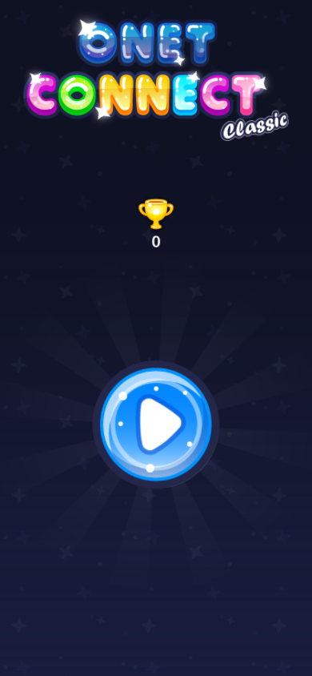
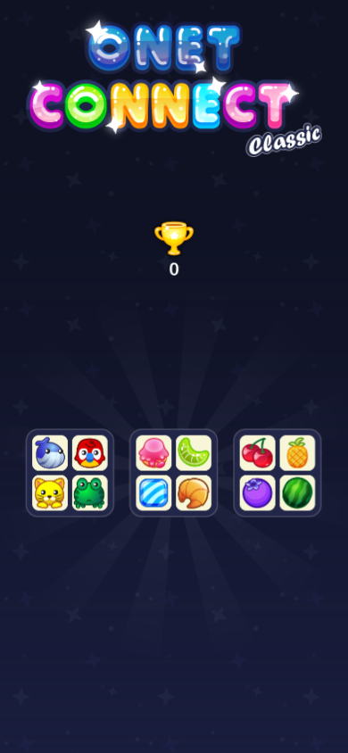
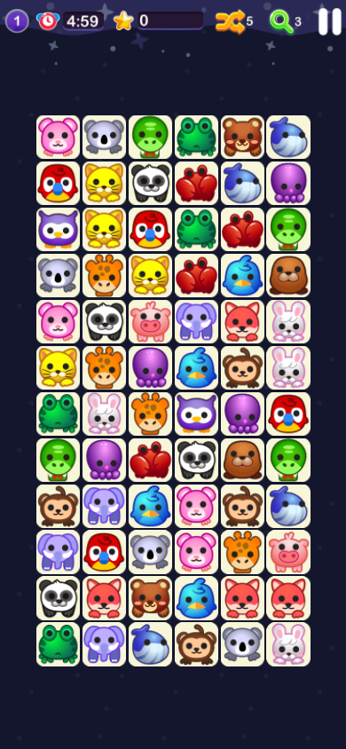
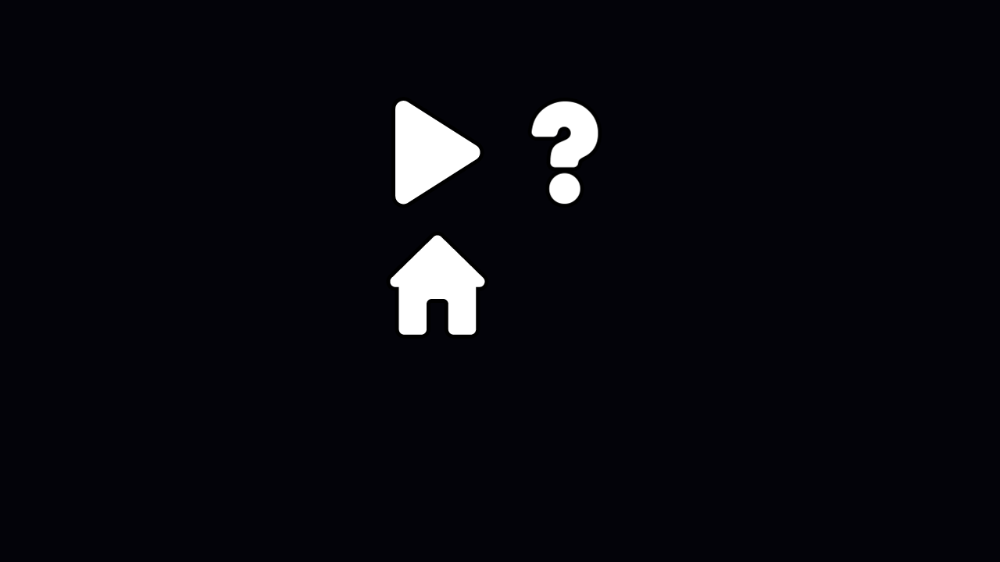

竖屏主菜单

原版 baseline/game.html；390×844 浏览器；打开后等待加载。
查看原版竖屏与资源，确定美术方向后再生产代表样。当前没有新风格或换皮成品。
按用户要求重绘：保留蓝色柔和圆润立体风格；包含音效开关、How to play 入口、震动开关与关闭；How to play 使用与音效、震动同一套白色立体圆润图标；三行文字左对齐。左为弹窗浮在主界面之上（沿用 v1/v3 构图），右为全屏面板。两图均为静态效果图，未接入游戏，未代表功能已实现。两版均为待确认状态：用户尚未批准其中任何一版，未获明确批准前不拆分、不搭建。
按用户反馈重做：现状只有大面积蓝板、纯文字与两个等大按钮。本稿保持已通过的蓝色圆润立体风格，与胜利结算系列同一排版体系；减少文字（全图仅 TIME UP / LEVEL 5 / RETRY / 1960，Home 为纯图标小方钮），以闹钟图形为主，RETRY 明显大于 Home。左起：v3（推荐，钟面正圆+标题与 VICTORY 同级）、v1 初版、v2 返修1（标题与横向节奏已对，但钟面变椭圆）。三稿与已批准胜利图的并排对照见 候选对比图、系列一致性图。三稿均为待确认状态：用户尚未批准任何一稿，未获明确批准前不拆分、不搭建、不替换任何游戏资源。


按主代理复核意见返修：去掉中文开发说明与重复长句、去掉右上角游离白色叉；仅保留已批准蓝色圆润风格——道具图标（槽位底板 + 射线）、大号 ×2、明显放大的 Watch ad 主按钮，以及同风格蓝色底板的次级 Close（更小、略暗）。v1 未通过，仅留档对照。此图为静态效果图，未接入游戏。待确认：未获明确批准前不拆分、不搭建、不改动游戏任何资源。
按主代理复核意见重做：改为单一手机页面（不再两栏并排），只保留给玩家看的内容——顶部图形化星星汇总（大星 + 总数）、分隔线、关卡列表（每关三颗星），底部同风格蓝色 Close；移除全部开发说明（验证规则、未知、未确认等一律不写给玩家）。空状态单独出图（大号空心星 + No level stars yet）。不展示任何星级阈值或推测口径。此图为静态效果图，未接入游戏。待确认：未获明确批准前不拆分、不搭建、不改动游戏任何资源。

原版 baseline/game.html；390×844 浏览器；打开后等待加载。

同一原版浏览器会话；点击开始。

同一原版浏览器会话；选择动物主题。

原版桌面 Chrome；自然点击暂停，画面为黑底白图标，宿主表现待核对。

原版桌面 Chrome；自然倒计时失败，缺少宿主广告接口。
优先代表样：竖屏对局（牌面、背景、局内 UI）与主菜单；确认后再按同族批量生产、集中回填和整屏回归。图集尺寸、帧矩形、挂点与点击区域须按实际数据核对。
共 70 个图片、音频与字体文件。按文件名初步分类，未见运行证据的用途均为候选；不等同已拆分图集帧或已确认替换清单。 下载 CSV · JSON
 flag_en.png
flag_en.png文件名分类，具体用途待运行核实
100×60 · P · 3,200 字节
用途：候选，待核实
 flag_fr.png
flag_fr.png文件名分类，具体用途待运行核实
100×60 · RGBA · 587 字节
用途：候选，待核实
文件名分类，具体用途待运行核实
音频/其他文件 · 3,499 字节
用途：候选，待核实
 leaderboard2.svg
leaderboard2.svg文件名分类，具体用途待运行核实
音频/其他文件 · 2,023 字节
用途：候选，待核实
文件名分类，具体用途待运行核实
600×253 · RGBA · 10,066 字节
用途：候选，待核实
文件名分类，具体用途待运行核实
180×180 · RGB · 16,408 字节
用途：候选，待核实
 9patch.png
9patch.png文件名分类，具体用途待运行核实
66×44 · RGBA · 742 字节
用途：候选，待核实
 autoshuffle-sheet0.png
autoshuffle-sheet0.png文件名分类，具体用途待运行核实
1024×1024 · RGBA · 254,872 字节
用途：候选，待核实
 bonus-sheet0.png
bonus-sheet0.png文件名分类，具体用途待运行核实
268×309 · RGBA · 29,189 字节
用途：候选，待核实
 bonus-sheet1.png
bonus-sheet1.png文件名分类，具体用途待运行核实
268×309 · RGBA · 9,441 字节
用途：候选，待核实
 bonusballs-sheet0.png
bonusballs-sheet0.png文件名分类，具体用途待运行核实
512×512 · RGBA · 132,684 字节
用途：候选，待核实
 bonusballs-sheet1.png
bonusballs-sheet1.png文件名分类，具体用途待运行核实
186×186 · RGBA · 27,654 字节
用途：候选，待核实
 bonuslid-sheet0.png
bonuslid-sheet0.png文件名分类，具体用途待运行核实
268×309 · RGBA · 25,296 字节
用途：候选，待核实
 brandingplaceholderbutton_transparent-sheet0.png
brandingplaceholderbutton_transparent-sheet0.png文件名分类，具体用途待运行核实
600×253 · RGBA · 719 字节
用途：候选，待核实
 credits-sheet0.png
credits-sheet0.png文件名分类，具体用途待运行核实
558×517 · RGBA · 97,084 字节
用途：候选，待核实
 cupsymbol-sheet0.png
cupsymbol-sheet0.png文件名分类，具体用途待运行核实
100×95 · RGBA · 8,770 字节
用途：候选，待核实
 dots-sheet0.png
dots-sheet0.png文件名分类，具体用途待运行核实
38×38 · RGBA · 446 字节
用途：候选，待核实
 gamebuttons-sheet0.png
gamebuttons-sheet0.png文件名分类，具体用途待运行核实
120×100 · RGBA · 5,617 字节
用途：候选，待核实
 gamebuttons-sheet1.png
gamebuttons-sheet1.png文件名分类，具体用途待运行核实
100×100 · RGBA · 4,794 字节
用途：候选，待核实
 gamefont.png
gamefont.png局内位图字体
256×32 · RGBA · 4,139 字节
用途：部分有运行或静态定位，见接口文档
 gametilebg.png
gametilebg.png文件名分类，具体用途待运行核实
101×101 · RGBA · 1,501 字节
用途：候选，待核实
 gradient-sheet0.png
gradient-sheet0.png文件名分类，具体用途待运行核实
17×252 · RGBA · 1,236 字节
用途：候选，待核实
 homebutton-sheet0.png
homebutton-sheet0.png返回按钮候选
243×99 · RGBA · 14,708 字节
用途：部分有运行或静态定位，见接口文档
 infobutton-sheet0.png
infobutton-sheet0.png文件名分类，具体用途待运行核实
126×126 · RGBA · 11,982 字节
用途：候选，待核实
 infobutton-sheet1.png
infobutton-sheet1.png文件名分类，具体用途待运行核实
125×126 · RGBA · 10,202 字节
用途：候选，待核实
 line-sheet0.png
line-sheet0.png文件名分类，具体用途待运行核实
8×8 · RGBA · 124 字节
用途：候选，待核实
 mark-sheet0.png
mark-sheet0.png文件名分类，具体用途待运行核实
104×104 · RGBA · 2,460 字节
用途：候选，待核实
 menufont.png
menufont.png菜单位图字体
64×256 · RGBA · 8,040 字节
用途：部分有运行或静态定位，见接口文档
 nomatch-sheet0.png
nomatch-sheet0.png文件名分类，具体用途待运行核实
1024×1024 · RGBA · 16,792 字节
用途：候选，待核实
 pause-sheet0.png
pause-sheet0.png暂停入口候选
100×100 · RGBA · 806 字节
用途：部分有运行或静态定位，见接口文档
 pausebuttons-sheet0.png
pausebuttons-sheet0.png文件名分类，具体用途待运行核实
145×145 · RGBA · 1,652 字节
用途：候选，待核实
 pausebuttons-sheet1.png
pausebuttons-sheet1.png文件名分类，具体用途待运行核实
145×145 · RGBA · 1,819 字节
用途：候选，待核实
 pausebuttons-sheet2.png
pausebuttons-sheet2.png文件名分类，具体用途待运行核实
145×145 · RGBA · 5,401 字节
用途：候选，待核实
 popfx-sheet0.png
popfx-sheet0.png文件名分类，具体用途待运行核实
512×512 · RGBA · 13,620 字节
用途：候选，待核实
 popfx-sheet1.png
popfx-sheet1.png文件名分类，具体用途待运行核实
512×512 · RGBA · 6,320 字节
用途：候选，待核实
 popup-sheet0.png
popup-sheet0.png结算弹窗候选
484×548 · RGBA · 116,780 字节
用途：部分有运行或静态定位，见接口文档
 shine-sheet0.png
shine-sheet0.png文件名分类，具体用途待运行核实
570×576 · RGBA · 93,009 字节
用途：候选，待核实
 shinetitle-sheet0.png
shinetitle-sheet0.png文件名分类，具体用途待运行核实
130×130 · RGBA · 6,517 字节
用途：候选，待核实
 soundbutton-sheet0.png
soundbutton-sheet0.png文件名分类，具体用途待运行核实
150×150 · RGBA · 3,859 字节
用途：候选，待核实
 soundbutton-sheet1.png
soundbutton-sheet1.png文件名分类，具体用途待运行核实
150×150 · RGBA · 1,427 字节
用途：候选，待核实
 soundmenu-sheet0.png
soundmenu-sheet0.png文件名分类，具体用途待运行核实
126×126 · RGBA · 11,443 字节
用途：候选，待核实
 soundmenu-sheet1.png
soundmenu-sheet1.png文件名分类，具体用途待运行核实
126×126 · RGBA · 10,852 字节
用途：候选，待核实
 sparkparticle.png
sparkparticle.png文件名分类，具体用途待运行核实
130×130 · RGBA · 6,549 字节
用途：候选，待核实
 startbutton-sheet0.png
startbutton-sheet0.png开始按钮
248×247 · RGBA · 19,476 字节
用途：部分有运行或静态定位，见接口文档
 sunray-sheet0.png
sunray-sheet0.png文件名分类，具体用途待运行核实
640×640 · RGBA · 130,246 字节
用途：候选，待核实
 themebutton-sheet0.png
themebutton-sheet0.png文件名分类，具体用途待运行核实
203×203 · RGBA · 14,695 字节
用途：候选，待核实
 themebutton-sheet1.png
themebutton-sheet1.png文件名分类，具体用途待运行核实
203×203 · RGBA · 29,966 字节
用途：候选，待核实
 themebutton-sheet2.png
themebutton-sheet2.png文件名分类，具体用途待运行核实
203×203 · RGBA · 33,427 字节
用途：候选，待核实
 tileempty.png
tileempty.png文件名分类，具体用途待运行核实
300×300 · RGBA · 2,277 字节
用途：候选，待核实
 tilepurple.png
tilepurple.png文件名分类，具体用途待运行核实
452×142 · RGBA · 5,130 字节
用途：候选，待核实
 tiles-sheet0.png
tiles-sheet0.png玩法牌：动物主题
512×512 · RGBA · 188,943 字节
用途：部分有运行或静态定位，见接口文档
 tiles-sheet1.png
tiles-sheet1.png玩法牌：甜点主题
512×512 · RGBA · 174,447 字节
用途：部分有运行或静态定位，见接口文档
 tiles-sheet2.png
tiles-sheet2.png玩法牌：水果主题
512×512 · RGBA · 60,250 字节
用途：部分有运行或静态定位，见接口文档
 tilestar.png
tilestar.png文件名分类，具体用途待运行核实
300×300 · RGBA · 6,019 字节
用途：候选，待核实
 timesup-sheet0.png
timesup-sheet0.png文件名分类，具体用途待运行核实
212×212 · RGBA · 17,807 字节
用途：候选，待核实
 title-sheet0.png
title-sheet0.png主菜单标题
1024×1024 · RGBA · 123,991 字节
用途：部分有运行或静态定位，见接口文档
 tutorial-sheet0.png
tutorial-sheet0.png文件名分类，具体用途待运行核实
455×515 · RGBA · 94,196 字节
用途：候选，待核实
 uisymbols-sheet0.png
uisymbols-sheet0.png文件名分类，具体用途待运行核实
128×128 · RGBA · 8,193 字节
用途：候选，待核实
文件名分类，具体用途待运行核实
音频/其他文件 · 12,780 字节
用途：候选，待核实
文件名分类，具体用途待运行核实
音频/其他文件 · 19,904 字节
用途：候选，待核实
文件名分类，具体用途待运行核实
音频/其他文件 · 7,803 字节
用途：候选，待核实
文件名分类，具体用途待运行核实
音频/其他文件 · 7,049 字节
用途：候选，待核实
文件名分类，具体用途待运行核实
音频/其他文件 · 15,359 字节
用途：候选，待核实
文件名分类，具体用途待运行核实
音频/其他文件 · 11,539 字节
用途：候选，待核实
文件名分类，具体用途待运行核实
音频/其他文件 · 195,068 字节
用途：候选，待核实
文件名分类，具体用途待运行核实
音频/其他文件 · 14,640 字节
用途：候选，待核实
文件名分类，具体用途待运行核实
音频/其他文件 · 6,084 字节
用途：候选，待核实
文件名分类，具体用途待运行核实
音频/其他文件 · 9,641 字节
用途：候选，待核实
文件名分类，具体用途待运行核实
音频/其他文件 · 7,759 字节
用途：候选，待核实
文件名分类，具体用途待运行核实
音频/其他文件 · 12,334 字节
用途：候选，待核实
请选择或提供美术方向与参考图；可说明题材、画风、色彩、需要保留的元素，以及是否先做对局代表屏。此前报告中的配色或题材只是建议，不代表已批准。
待核实：全部帧的用途与锚点、特殊状态、竖屏暂停与结算、AHA 宿主实际画面。新美术的效果图、候选、替换和真实运行验收均尚未开始。